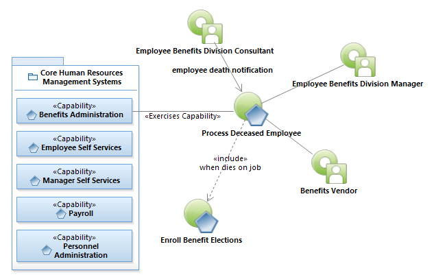
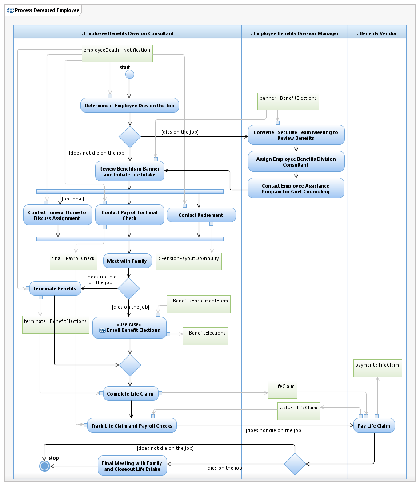

Use Case Model: Process Deceased Employee
Architect: Rob Byrd, Chief Enterprise IT Architect
Date Last Modified: 05/14/2012
User Review: Andrea Glasper, Benefits Specialist
Date: 04/27/2012
When an employee dies a file is opened. The funeral home may be contacted if an assignment is being requested by the beneficiary(ies) to assist with payment of funeral expenses. The beneficiary(ies) complete paperwork and claim is filed with the insurance company once death certificate and all paperwork is received. Claim is paid and file is closed.
Follow link to Role Definitions

Use Case Model: Process Deceased Employee
Follow link to Enroll Benefit Elections

Activity Model: Process Deceased Employee